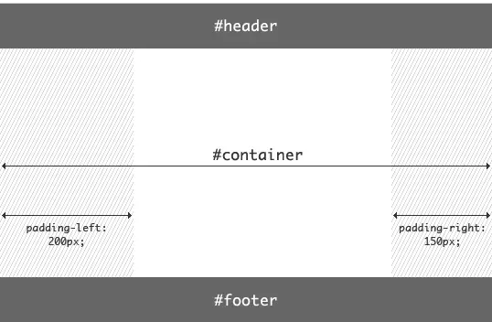
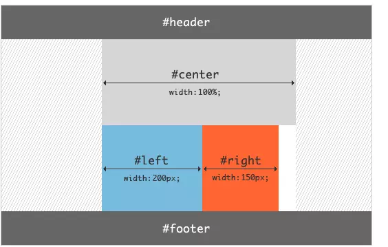
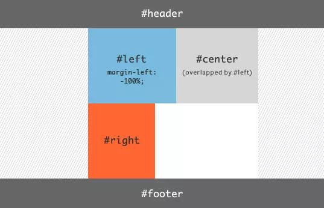
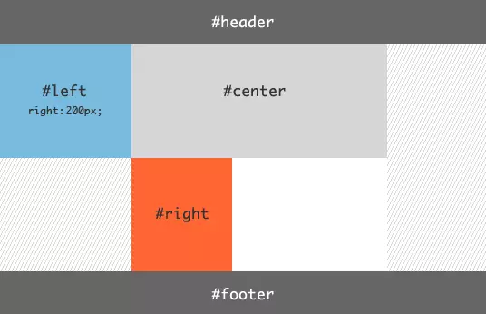
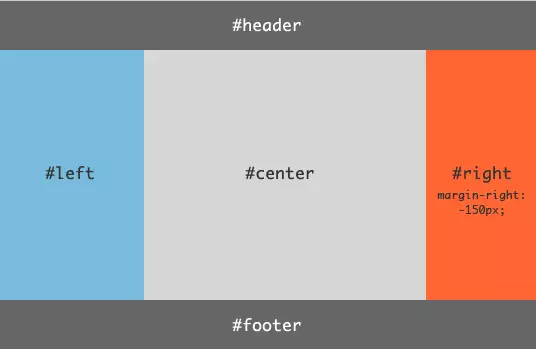

圣杯布局和双飞翼布局
都是两边固定宽度，中间自适应的三栏布局。都有用到float: left
主要的不同之处就是在解决中间部分被挡住的问题时，采取的解决办法不一样：
圣杯布局是在父元素上设置了padding-left和padding-right，在给左右两边的内容设置position为relative，通过左移和右移来使得左右两边的内容得以很好的展现；
双飞翼则是在center这个div中再加了一个div来放置内容，在给这个新的div设置margin-left和margin-right 。
圣杯布局
<body>
<div class="header">header</div>
<div class="container">
<div class="center">center</div>
<div class="left">left</div>
<div class="right">right</div>
</div>
<div class="footer">footer</div>
</body>
.header {
height: 50px;
background: #666;
text-align: center;
}
.container {
/* 左右栏通过添加负的margin放到正确的位置了，此段代码是为了摆正中间栏的位置 */
padding: 0 200px 0 150px;
height: 100px;
}
.center {
float: left;
width: 100%; /* 左栏上去到第一行 */
height: 400px;
background: skyblue;
}
.left,
.right {
height: 400px;
background: pink;
float: left;
position: relative;
}
.left {
width: 150px;
margin-left: -100%;
/* 中间栏的位置摆正之后，左栏的位置也相应右移，通过相对定位的left恢复到正确位置 */
left: -150px;
}
.right {
width: 200px;
margin-left: -200px;
/* 中间栏的位置摆正之后，右栏的位置也相应左移，通过相对定位的right恢复到正确位置 */
right: -200px;
}
.footer {
height: 50px;
background: #666;
text-align: center;
}
这三个盒子全都脱离了文档流，那么让左右盒子“爬升”至上一行，需要用到负margin；
相对定位的目的是把左右两盒子移动到父盒子的padding里。
|  |  |
|---|---|
|  |  |
|  |
双飞翼布局——淘宝UED
<body>
<div class="header">header</div>
<div class="middle">
<div class="inside">middle</div>
</div>
<div class="left">left</div>
<div class="right">right</div>
<div class="footer">footer</div>
</body>
.header {
height: 50px;
background: #666;
text-align: center;
}
.middle {
float: left;
width: 100%; /* 左栏上去到第一行 */
height: 400px;
background: skyblue;
}
.left,
.right {
float: left;
height: 400px;
background: pink;
}
.left {
width: 150px;
margin-left: -100%; /* 相对于父元素宽度 */
}
.right {
width: 200px;
margin-left: -200px;
}
/* 给内部div添加margin，把内容放到中间栏，其实整个背景还是100% */
.inside {
margin: 0 200px 0 150px;
height: 400px;
}
.footer {
clear: both; /* 记得清楚浮动 */
height: 50px;
background: #666;
text-align: center;
}
三栏布局的其他实现
Flex布局
<body> <header>...</header> <div class="content"> <main>...</main> <nav>...</nav> <aside>...</aside> </div> <footer>...</footer> </body>body { display: flex; min-height: 100vh; flex-direction: column; } header, footer { flex: 1; } .content { display: flex; flex: 1; } main { flex: 1; } nav, aside { /* 两个边栏的宽度设为12em */ flex: 0 0 12em; } nav { /* 导航放到最左边 */ order: -1; }绝对定位布局
table-cell布局
网格布局——grid
总结
- 圣杯布局、双飞翼布局、flex布局的高度取决于内容区(center部分)，页面的高度取决于内容区；
- 绝对定位的内容区高度取决于两边栏的最高点；
- table-cell布局能让三栏的高度一致，但不能优先渲染 center；
- 网格布局极其强大，但兼容性差。